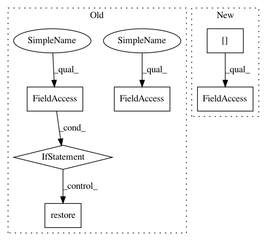

db4fc0e5816a504a87e4a2a603b065c179406a04,xnornet_plusplus/main.py,,validate,#Any#Any#Any#Any#,263
Before Change
model.eval()
end = time.time()
if args.quantize:
bin_op.binarization()
for i, (input, target) in enumerate(val_loader):
target = target.cuda(async=True)
input_var = torch.autograd.Variable(input, volatile=True)
target_var = torch.autograd.Variable(target, volatile=True)
// compute output
output = model(input_var)
loss = criterion(output, target_var)
// measure accuracy and record loss
prec1, prec5 = accuracy(output.data, target, topk=(1, 5))
losses.update(loss.item(), input.size(0))
top1.update(prec1[0], input.size(0))
top5.update(prec5[0], input.size(0))
// measure elapsed time
batch_time.update(time.time() - end)
end = time.time()
if i % args.print_freq == 0:
logging.info("Test: [{0}/{1}]\t"
"Time {batch_time.val:.3f} ({batch_time.avg:.3f})\t"
"Loss {loss.val:.4f} ({loss.avg:.4f})\t"
"Prec@1 {top1.val:.3f} ({top1.avg:.3f})\t"
"Prec@5 {top5.val:.3f} ({top5.avg:.3f})".format(
i, len(val_loader), batch_time=batch_time, loss=losses,
top1=top1, top5=top5))
if args.quantize:
bin_op.restore()
logging.info(" * Prec@1 {top1.avg:.3f} Prec@5 {top5.avg:.3f}"
.format(top1=top1, top5=top5))
tb_writer.add_scalar("test/loss", losses.avg, epoch)
tb_writer.add_scalar("test/top1", top1.avg, epoch)
After Change
loss = criterion(output[0]["logits"], target_var)
// measure accuracy and record loss
prec1, prec5 = accuracy(output[0]["logits"].data, target, topk=(1, 5))
losses.update(loss.item(), input.size(0))
top1.update(prec1[0], input.size(0))
top5.update(prec5[0], input.size(0))
In pattern: SUPERPATTERN
Frequency: 3
Non-data size: 6
Instances
Project Name: sankit1/cv-tricks.com
Commit Name: db4fc0e5816a504a87e4a2a603b065c179406a04
Time: 2020-12-22
Author: kanchan@aimonk.com
File Name: xnornet_plusplus/main.py
Class Name:
Method Name: validate
Project Name: yahoo/TensorFlowOnSpark
Commit Name: 740a50efc55d175bd95e605d7fc1e037ca640b9b
Time: 2019-07-25
Author: leewyang@verizonmedia.com
File Name: tensorflowonspark/pipeline.py
Class Name:
Method Name: _run_model
Project Name: sankit1/cv-tricks.com
Commit Name: db4fc0e5816a504a87e4a2a603b065c179406a04
Time: 2020-12-22
Author: kanchan@aimonk.com
File Name: xnornet_plusplus/main.py
Class Name:
Method Name: train